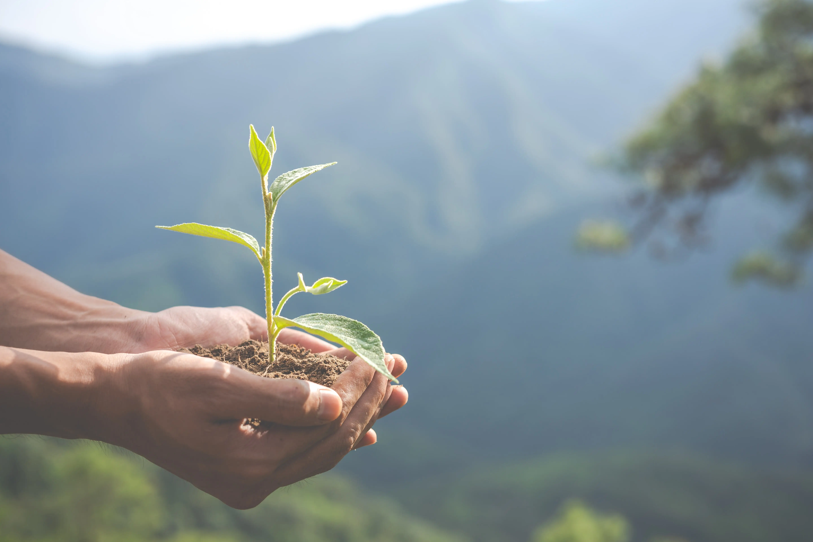

dezembro 4, 2019 • 5A Inteligência
As florestas são vitais para a saúde do nosso planeta 🌍 — abrigam uma imensa biodiversidade, ajudam a regular o clima e fornecem recursos essenciais. No entanto, enfrentam ameaças crescentes como desmatamento, urbanização e mudanças climáticas.
A boa notícia? A tecnologia está se tornando uma poderosa aliada na preservação dos nossos ecossistemas. Veja como: 👇
Com drones e nanossatélites, é possível monitorar grandes áreas florestais continuamente. Isso permite a detecção precoce de problemas como incêndios, pragas ou tempestades.
➤ Resposta rápida = menos danos ao ambiente.
A Inteligência Artificial (IA) transforma grandes volumes de dados em decisões inteligentes. Com algoritmos avançados, é possível:
Modelos baseados em IA e simulação ajudam a prever como as florestas irão crescer, considerando variáveis como clima e solo. Isso garante um manejo mais sustentável.
Através de análises genéticas, podemos identificar e monitorar espécies em risco. Esses dados são essenciais para ações de conservação e proteção da biodiversidade.
O mapeamento florestal digital substitui métodos tradicionais caros e demorados, otimizando recursos e reduzindo a necessidade de trabalho manual intensivo.
Aplicativos com reconhecimento de imagens e bancos de dados ajudam pesquisadores e o público a identificar plantas e animais, promovendo a educação ambiental e a valorização da natureza.
A IA pode analisar sons da natureza, como o canto de aves e sons de mamíferos,
para detectar a presença de espécies sem interferir no ambiente. É
A tecnologia está moldando um novo caminho para a conservação florestal. Ferramentas modernas permitem uma gestão mais eficiente, econômica e ambientalmente responsável.
Ao integrar inovação e sustentabilidade, podemos proteger nossas florestas e garantir um futuro melhor para todos. 🌿🚀